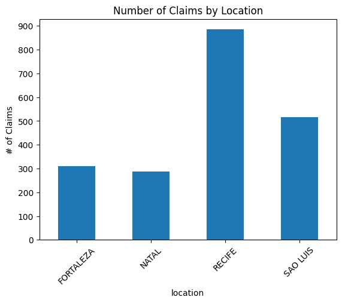
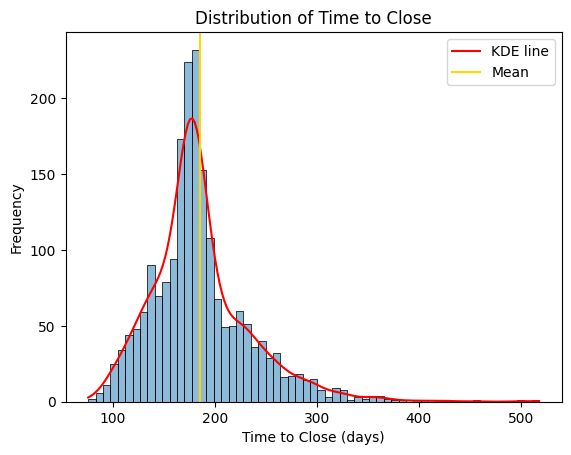
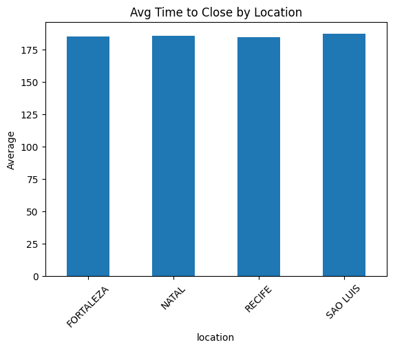
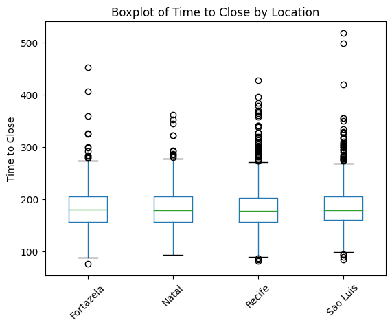

Analyzing Food Poisoning Claims
Background
This project was presented to me for certification in data analysis by DataCamp. The data and original ipynb can be found by following the source code link on the left nav.
Viviendo is a fast food chain in Brazil with over 200 outlets. Customers often claim compensation from the company for food poisoning. The legal team processes these claims, and has offices in four locations. They want to omprove how long it takes to reply to customers and close claims. The head of the legal department wants a report on how each location differs in the time it takes to close claims.
The Data
The data has been formatted in an excel document following the layout in the following table. Not all data currently matches what is listed in the description.
| Column Name | Criteria |
|---|---|
| claim_id | Nominal. The unique identifier of the claim. Missing values are not possible. |
| time_to_close | Discrete. The number of days to close the claim, can be any positive value. |
| claim_amount | Continuous. The initial claim requested in the currency of Brazil, rounded to 2 decimal places. |
| amount_paid | Continuous. Final amount paid in the currency of Brazil, rounded to 2 decimal places. |
| location | Nominal. Location of the claim. One of: "Recife", "Sao Luis", "Fortaleza", or "Natal". |
| individuals_on_claim | Discrete. Number of individuals on this claim, minimum of 1 person. |
| linked_cases | Nominal. Wheter this claim is linked to other cases; either true or false. |
| cause | Nominal. Cause of the food poisoning. One of: "vegetable", "meat", or "unknown". |
Cleaning Data
The dataset provided was examined and cleansed to match the desired form found in "Criteria" in the table above. The methods for each column are as follows.
unchanged columns
The columns: "claim_id", "time_to_close", "location", and "individuals_on_claim" all required no changes. Appropriate steps were taken for each to ensure that the entries of the column matched what they should be based off of the description.
claim_amount
This column had no missing data. However, the values were all entered as strings of the form "R$ [amount]" to denote the local currency. The beginning "R$ " was stripped from the column, amounts were changed to be floats, and pandas was formatted to force 2 decimal points to show. The last part of this was necessary for entries such as "123.4" to show up as "123.40", as specified in the table.
amount_paid
The column had 36 missing values, which were replaced with the median of the column: 20,105.70. After filling the null values, the column matches the description.
linked_cases
This column had 26 missing values, all of which were replaced with "False". After filling the null values, every entry in the column was boolean, so no further changes were needed.
cause
This column had no missing values, but did have unwanted entries. The strings "VEGETABLES" and " Meat" showed up a combined total of 30 times. These were changed to "vegetable" and "meat", respectively, and no further modifications were necessary.
Claims by Location
As shown in the following barplot, most claims (885 of 2000) came from Recife. Further, as we can see in the pie chart following, the observations are balanced between Fortaleza and Natal. However, Sao Luis has a significantly higher number of claims, and Recife an even more substantial amount.

Distribution of Time to Close
When looking at all claims, the distribution of time to close is right skewed. More explicitly, the minimum is 76, maximum is 518, with the average being approximately 186. Of the 2000 claims, 1218 of them have a time to close that is lower than the average, and the density of claims peaks around 177. All of this is visualized in the following graph.
As is shown above, the density peaks (the top of the red line) to the left of the mean, and trails off to the right. Since the graph looks like a normal distribution, but moved to the left, we would call this a right-skewed distribution.
Time to Close by Location
Although there was a relatively large disparity in the number of claims by location (shown previously), visualization and analysis of the time to close (TTC) variable grouped by location appears to be much more even across each location. To demonstrate this, one graph has been created showing the average TTC by location and another showing the first and third quartiles and median of TTC by location.
 As it is shown, the averages are all very close to the same value. Further, even the boxplot shows a striking similarity in TTC for each location, though the areas with the higher amount of observations account for a majority of the outliers (empty circles). Actual values for each are provided below.
| Location | Mean | Q1 | Median | Q3 |
|---|---|---|---|---|
| Fortaleza | 185.31 | 157.00 | 180.00 | 205.50 |
| Natal | 185.93 | 157.00 | 179.00 | 205.50 |
| Recife | 184.61 | 157.00 | 178.00 | 203.00 |
| Sao Luis | 187.17 | 157.00 | 179.00 | 205.00 |
Following up on the visualization and summary statistic calculations, a one-way ANOVA test was run. This confirmed what can be assumed from the graphs: there is no statistically significant difference in mean TTC between any locations (F(3, 1996)=.30, p=0.82).
Conclusion
Shown throughout the analysis portion and ultimately in the ANOVA test, we can safely conclude that there is no significant relationship between the location of a claim and the time to close that claim. On the one hand, this does show that despite a larger or smaller amount of claims, each location operates approximately the same, so the business is consistent. On the other hand, this would also imply that improving TTC overall can't be done by just working on one location. If the average (~186) is too high, then work will need to be done across the board to improve TTC.